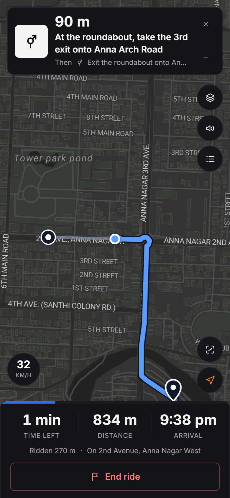
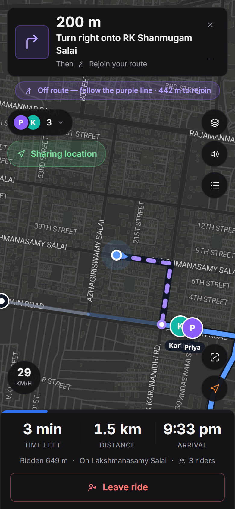
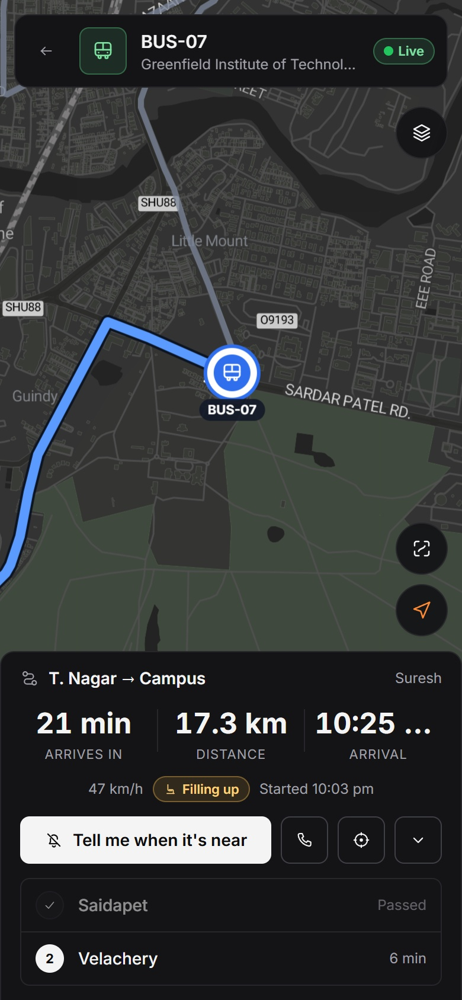
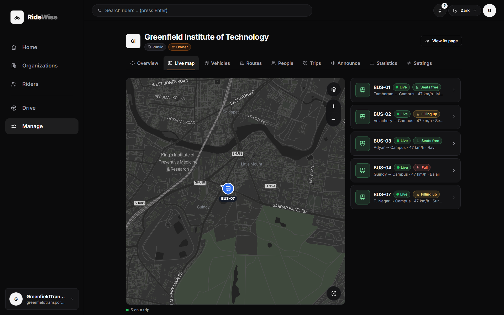

OPEN-SOURCE GIS · NAVIGATION & FLEET TELEMETRY
Every journey, connected.
One open-source spatial platform that lets you ride solo with voice turn-by-turn, sync live convoys with friends, track campus buses stop-by-stop, or dispatch an entire city fleet — with zero paid map API keys.
Why road software feels broken into silos
Most GPS apps solve only one slice of the road. Consumer navigation apps guide a single phone from A to B, but go blind the moment three friends want to stay in sync or a college needs to show 400 students where Bus #7 actually is. On the other side, commercial fleet tools lock schools, travel operators, and local transit behind sales calls, hardware dongles, and steep per-vehicle subscriptions.
RideWise collapses that wall with per-organization RBAC over an open geospatial stack. The same account you use for your morning commute can lead a weekend group ride at noon, drive a campus shuttle in the afternoon, and inspect live vehicle telemetry across an entire city by evening.
02 · BUILT FOR EVERY MINDSET
One engine, four distinct road experiences.
Switch between perspectives below to watch real RideWise recordings and live telemetry parameters adapt to each rider, passenger, and operator.
Solo Riders
Plan routes with live alternatives, spoken maneuver prompts, and segment-projected off-route recovery across 6 open map styles — with Screen Wake Lock and zero API lock-in.
- 6 map styles: Auto, Standard, Dark, Satellite, Terrain, Cycling
- Accuracy-scaled off-route hysteresis prevents noisy reroutes
- 4 adaptive UI themes + persistent ride history
03 · INTERFACE ANATOMY
Inspect every live layer inside the app.
Tap any numbered spatial pin on the real RideWise screens below to inspect how navigation math, WebSockets, and transit UX work together — or click any image to zoom full-screen.

Spoken Web Speech cues trigger dynamically by current speed and approach distance.
Live speed, remaining 8.4 km, and ETA computed purely in navigation.js.
Solo Turn-by-Turn Navigation
Distraction-free maneuver card, live speed telemetry, and Screen Wake Lock.

Instead of forcing awkward U-turns, RideWise computes an intercept path ahead on the convoy route.
Opt-in rider coordinates stream in real time with instant Off route alerts for the group.
Group Convoy & Purple Rejoin
Keep riders together with live breadcrumbs and smart forward intercept routing.

Passed stops dim automatically while upcoming stops update live from vehicle GPS.
See Seats free / Filling up / Full and set a "Tell me when it's near" alert.
Passenger Stop Timeline & Alerts
No more guessing at the bus stop — unlock public or private orgs with a code.

Live positions fan out over /ws/fleet with 5s throttled PostgreSQL persistence.
Manage vehicles, routes, drivers, trip GPS replays, CSV exports, and announcements.
Multi-Vehicle Fleet Operations
Atomic driver/vehicle locking, trip GPS replay, SOS alerts, and live analytics.
04 · UNDER THE HOOD
Open geospatial architecture, engineered for builders.
Zero proprietary map SDKs. RideWise pairs a React 19 + Leaflet client with a Java 21 / Spring Boot 3.4 WebSocket backend and database-enforced invariants.
Browser-Direct Open Stack
OSM, Stadia, Esri, OpenTopoMap & CyclOSM tiles plus Photon/Nominatim search and OSRM routing run straight from the browser — 0 bytes proxied through the backend.
Pure navigation.js Engine
Zero React or Leaflet dependencies. Handles route segment projection, maneuver announcements, off-route hysteresis, and passenger ETA estimation cleanly.
Throttled WebSocket Telemetry
/ws/rides and /ws/fleet broadcast from memory with 25s heartbeat pings while PostgreSQL persists thinned tracks (max 4,000 pts/trip) every 5s.
Server-Enforced RBAC & Locks
OrgGuard validates every organization call, and nullable unique keys (active_vehicle_key, active_driver_key) prevent double-booking at the DB layer.
# Terminal 1 — Spring Boot 3.4 API + WebSockets on :8080
cd backend/ridewise && ./mvnw spring-boot:test-run
# Terminal 2 — React 19 + Vite 8 frontend on :5173
cd frontend && npm run dev